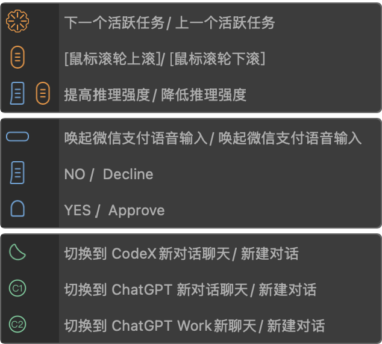

旋钮管任务
在活跃任务间快速切换，不必在侧边栏里点来点去。
Leo Liu · 官方已审核发布
把模型切换、推理强度、活跃任务、审批和语音输入收进左手，让 Codex 工作流不停键盘。

ChatGPT / Codex 高频操作太散：切模型、调推理、管多任务、点审批、再唤起语音。TourBox 把它们收成一套手感。
在活跃任务间快速切换，不必在侧边栏里点来点去。
按住侧键滚滚轮，提高或降低推理强度，边聊边调。
YES / Approve 与 NO / Decline 就在拇指区，审批不停手。
Tour / C1 / C2 分别打开 Codex、ChatGPT、Work 新对话。
以下对应本预设在 TourBox Console 中的主要映射。导入后也可打开 Guide / HUD 对照实体键位。
这些动作已写进预设；具体落在 D-pad 或组合键上，导入后在 Console 的 Guide 里可一眼看清。
重点推荐
ChatGPT / Codex 自带语音很强，但只在应用内生效。真正卡住工作流的，往往是：你在浏览器、终端、文档、邮件里想到一句指令，还得切回 ChatGPT 再点麦克风。
我建议把 Top（左上横键） 从「仅 ChatGPT 语音」改成 微信输入法的语音输入，并设成全局快捷键。这样无论当前焦点在哪个窗口，按一下就能说，说完文字直接落在输入框——再粘贴或发送给 Codex，比进 App 开 Voice 更轻。
手感建议：横键最适合「按住说话 / 点按唤起」——位置固定、盲按不易误触，比去找键盘组合键稳得多。
官方库已审核通过；下载后按自己的 ChatGPT / Codex 版本和快捷键习惯改几下即可。
从 TourBox 官方分享页 下载，或直接使用本页的 .tb 文件。
打开 TourBox Console → 预设列表 → 导入，选择下载的文件，绑定到 ChatGPT 应用。
若你改过 ChatGPT / Codex 的快捷键（模型、推理、审批、新建对话等），在对应按键上改成与你系统一致的组合键。
YES / NO 可对调；推理强度若更想用旋钮，把 Side+Scroll 的映射换过去即可。左上横键建议保留给全局语音。
初学阶段打开 TourBox HUD，按键时浮层提示功能名，一周后就能盲操。